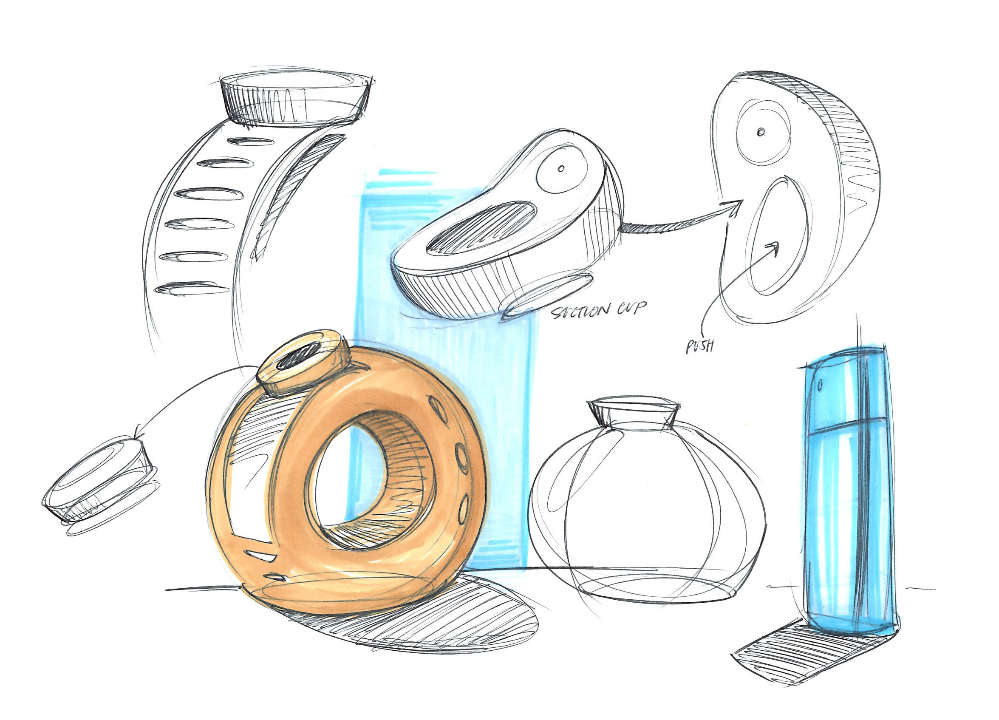
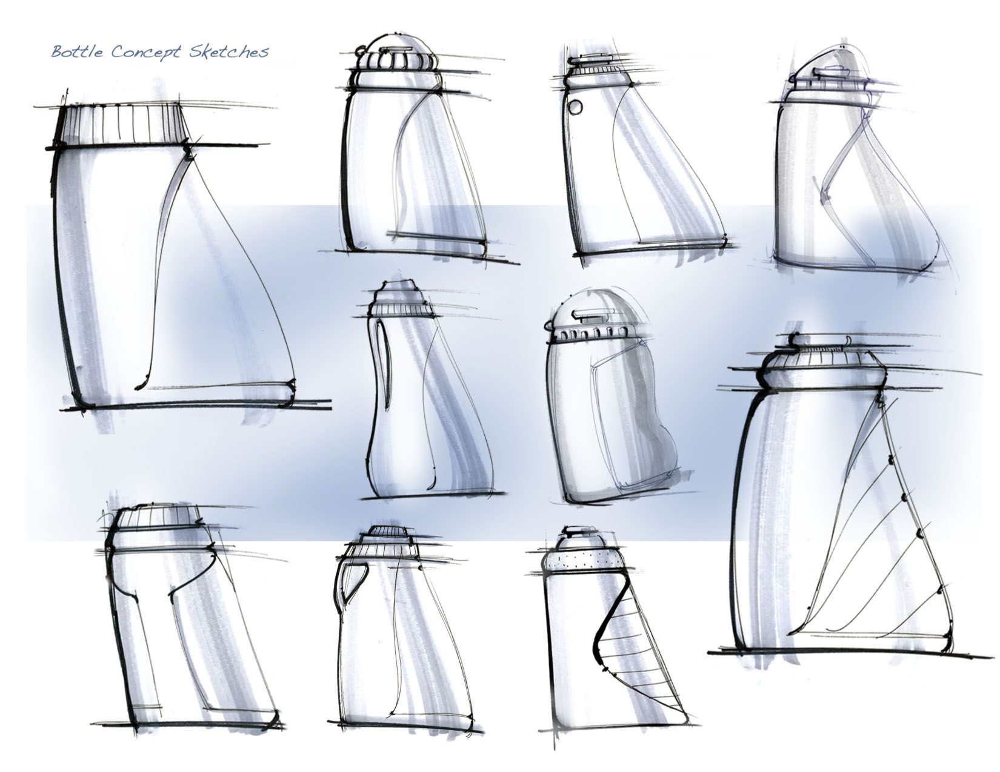

Lotion Bottle for national grocery brand
I've been responsible for leading teams from start to finish on many website and app projects, but I'd never gotten an opportunity quite like this one before. On this page, I will show you what I can. I know it jumps around a bit, but hopefully, this impresses all the same!
The concept was simple:
Design a lotion bottle that could be placed on anybody's bathroom sink and have it convey the decor's funky and fun personality.
Early beginnings of the design using some never before seen concepts and theoretical user experience ideas.

Use a suction cup to allow the User to stick it to the wall??
Sometimes, wild and crazy ideas turn out to be the ones that bring sales into the green.

This is the current product line which would make for an easy order to the printers.
Transparency removed here so you can see the outlines and clear pieces.
The current product world involving sunflowers are either printed (or painted) on to bottles themselves or they are sold in cooking oil bottles.
This gave me the idea of designing a sunflower to be 3D and use that model as the lotion bottle. The biggest hurdle was presenting something outside of the already approved bottle shapes and sizes.
The final approved design included some meetings with product management to explain the design and why it would be successful.
I can share some of that with during our meeting. It took some time speaking with the buyers and product managers to convince them of this conceptual design and to bring it to the store floor.
The first product was built and leaped over pre-production testing! A few minor changes included changing from a lotion bottle to a hand wash bottle and raising the print of the design to be even more 3D. The product ended up being bought by Trader Joe's and hit the store floor in April of this year, 2023.